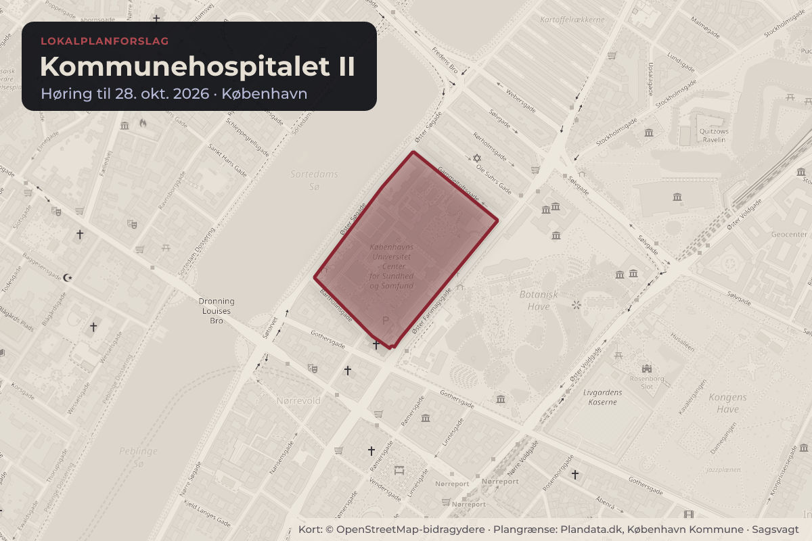
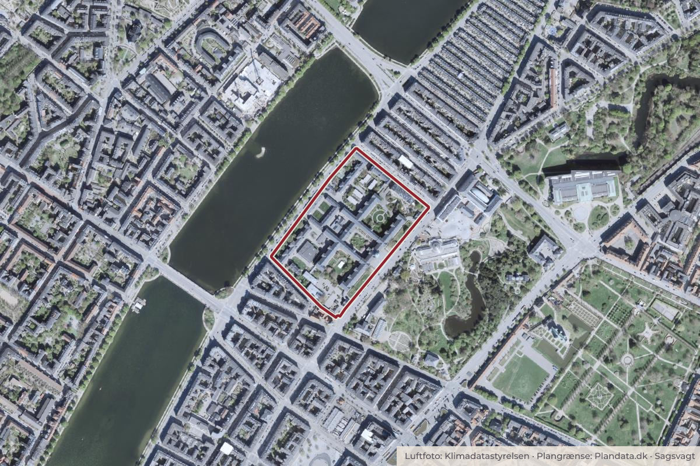

Besluttet 8. oktober, Indre By Lokaludvalg
Høringssvar om forslag til lokalplan og kommuneplantillæg for Kommunehospitalet

Kort: © OpenStreetMap-bidragydere. Plangrænse: Plandata.dk, København Kommune.

Kort fortalt
- Forslaget
- Indre By Lokaludvalg godkender høringssvaret til Klima-, Miljø- og Teknikforvaltningen (KTF) om forslag til lokalplan og kommuneplantillæg for Kommunehospitalet, som ses i bilagsoversigten.
- Hvem
- Indre By Lokaludvalg
- Hvornår
- Torsdag 8. oktober 2026
- Status
- Besluttet. Lokaludvalget tiltrådte et ændringsforslag fra Hein Christensen om, at høringssvaret skal indeholde en bemærkning om, at lokaludvalget beder om, at der udarbejdes analyser af, hvordan trafikken i området påvirkes. Lokaludvalget tiltrådte et ændringsforslag fra Jacob Fenger om, at høringssvaret skal indeholde forslag om, at det undersøges, om biblioteket på Dag Hammarskjölds Allé kan flyttes til Kommunehospitalet for det tilfælde, at det igen kommer på tale at lukke det.Beslutningen er forkortet her. Læs hele beslutningen
- Næste skridt
- Sekretariatet lægger lokaludvalgets høringssvar på Bliv hørt-portalen. 0.1. Link til høringen på Bliv hørt-portalen: https://blivhoert.kk.dk/hearing/308 0.2.
Er noget forkert her? Skriv til os
Læs hele sagen Kommunens egen tekst
Indstilling
om,
• at Indre By Lokaludvalg godkender høringssvaret til Klima-, Miljø- og Teknikforvaltningen (KTF) om forslag til lokalplan og kommuneplantillæg for Kommunehospitalet, som ses i bilagsoversigten.
Problemstilling
Borgerrepræsentationen besluttede den 20. august 2026 at sende lokalplanforslaget og forslag til kommuneplantillæg i offentlig høring på Bliv hørt-portalen: https://blivhoert.kk.dk/hearing/308 . Høringsfristen er den 28. oktober 2026.
Lokalplanforslaget muliggør en bredere anvendelse end muliggjort i den gældende lokalplan, da Københavns Universitet forventes af flytte inden for en årrække. Nye anvendelser vil være serviceerhverv såsom hotel og butikker samt håndværk og værksteder, og der vil fortsat være mulighed for bl.a. boliger, uddannelse og institutioner.
Sammen med KTF var Indre by Lokaludvalg den 23. september 2026 vært for et offentligt orienteringsmøde om lokalplanforslaget.
Lokaludvalget har spurgt dets følgere på Facebook og Instagram om deres holdninger til lokalplanforslaget. Kommentarerne ses i bilagsoversigten.
Lokaludvalgets Byudviklingsgruppe har udarbejdet udkastet til høringssvaret, der ses i bilagsoversigten.
Løsning
Lokaludvalget godkender høringssvaret, som ses i bilagsoversigten.
Økonomi
Intet.
Videre proces
Sekretariatet lægger lokaludvalgets høringssvar på Bliv hørt-portalen.
0.1. Link til høringen på Bliv hørt-portalen:
https://blivhoert.kk.dk/hearing/308
0.2. Link til en artikel om borgermødet den 23. september 2026:
https://indrebylokaludvalg.kk.dk/nyheder/fra-kommunehospital-til-farimagshaverne
Beslutning
Lokaludvalget tiltrådte et ændringsforslag fra Hein Christensen om, at høringssvaret skal indeholde en bemærkning om, at lokaludvalget beder om, at der udarbejdes analyser af, hvordan trafikken i området påvirkes.
Lokaludvalget tiltrådte et ændringsforslag fra Jacob Fenger om, at høringssvaret skal indeholde forslag om, at det undersøges, om biblioteket på Dag Hammarskjölds Allé kan flyttes til Kommunehospitalet for det tilfælde, at det igen kommer på tale at lukke det.
Lokaludvalget tiltrådte et ændringsforslag fra Marietta Bonnet om, at det i høringssvaret skal slås fast, at lokaludvalget mener, at de grønne områder skal respekteres.
Lokaludvalget tiltrådte et ændringsforslag fra Kjeld A. Larsen om, at linje 61-63 formuleres: "hvordan kan valg og transport af byggematerialer, byggemetoder samt brugen af maskiner, teknologi og håndværk gøre byggeriet til en nyskabende inspirationsmodel for transformative byggerier med så lav klimabelastning som muligt i det historiske, fremsynede og bæredygtige København?"
Lokaludvalget tiltrådte et ændringsforslag fra Bent Lohmann om, at høringssvaret skal indeholde forslag om, at der skal være dialog med beboerne om, hvad der kan være i Kvindehaven, som tager hensyn til hverdagslivet.
Lokaludvalget tiltrådte et ændringsforslag fra Bent Lohmann om, at høringssvaret skal skrives i et aktivt sprog og at der i stedet for spørgsmålene nævnes, hvad lokaludvalget ønsker, herunder at vinduerne og andet, der er der nu, skal bevares.
Lokaludvalget tiltrådte et ændringsforslag fra Sally Mountfield om, at høringssvaret skal indeholde en bemærkning om, at cykelskuret i gården skal være i samklang med byningen.
Lokaludvalget tiltrådte et ændringsforslag fra Kren Nielsen om, at høringssvaret skal indeholde en bemærkning om, at der ikke skal være natteliv i området.
Lokaludvalget tiltrådte et ændringsforslag fra Hjørdis Nielsen om, at høringssvaret skal indeholde en bemærkning om, at de omkringboende frygter en tivolisering af Kvindehaven.
Lokaludvalget godkendte høringssvaret, som ses i bilagsoversigten, med de tiltrådte ændringsforslag, idet Åge Staghøj blev bemyndiget til at foretage redaktionelle ændringer.
Bilag
- 1. Forslag til et høringssvar
- 2. Digital borgerdialog på lokaludvalgets Facebookside om sagen
- 3. Forslag til lokalplan med tillæg til kommuneplanen (uddrag på papir)
Kilde: Københavns Kommune, Indre By Lokaludvalg, referat fra mødet torsdag 8. oktober 2026, punkt 6. Læs den originale sag hos kommunen.